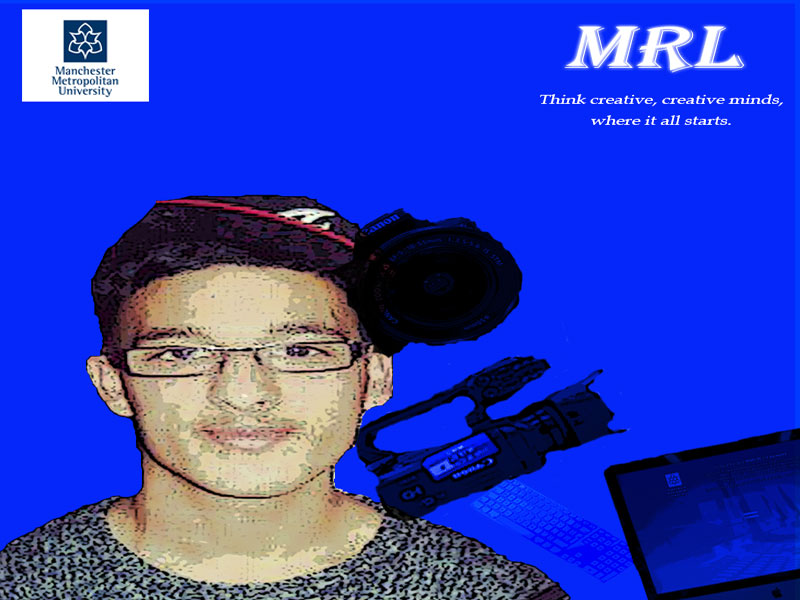
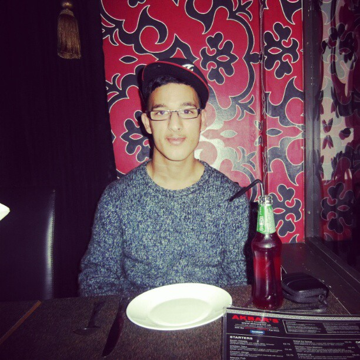

MRL

Description
This poster is to promote and advertise the MRL within the information and communications department. In this environment space, creative students collaborate to do individual and group projects. Hence the slogan, “Think creative, creative minds, where it all starts.” I want to show upcoming students who decide to study with MMU, that if you have a creative mind, MMU will help you expand your knowledge through their creative courses and assist you with the latest hardware and software, so that they can get the best out of your creative ability. As you can see in the poster the updated technology the MRL have for their students to use. These include Mac's, PC's and video recorder's and camera's.
Rationale
The inspiration for this poster came from Roy Lichtenstein who was a Pop Artist. He was known for his art especially in comic book styles and his bold lines and ben bay dots. I try to integrate these styles and techniques into my poster. Strong and bold colours were used in this poster to attract the audience attention.
Thumbnails
